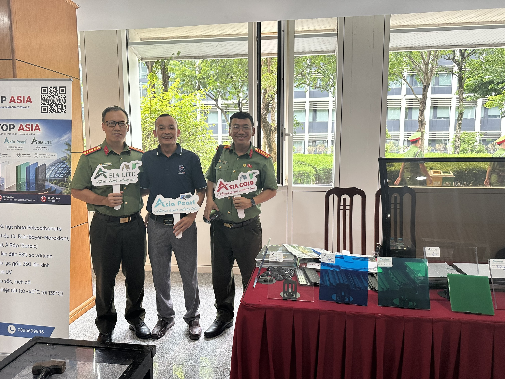
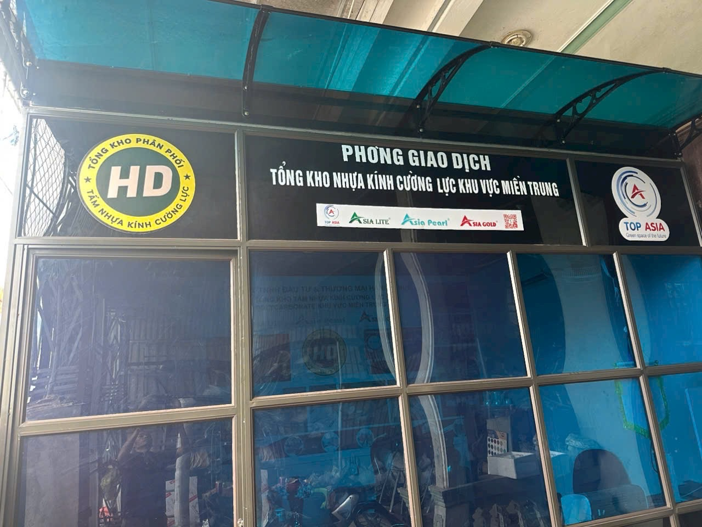
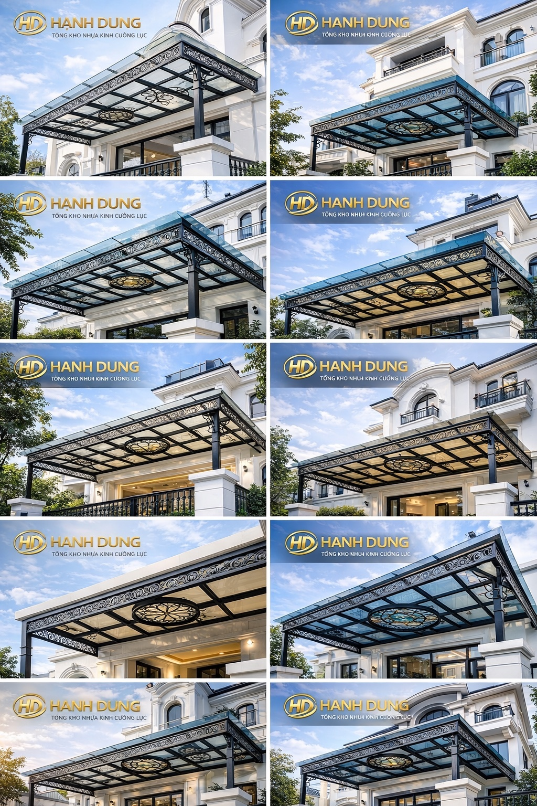
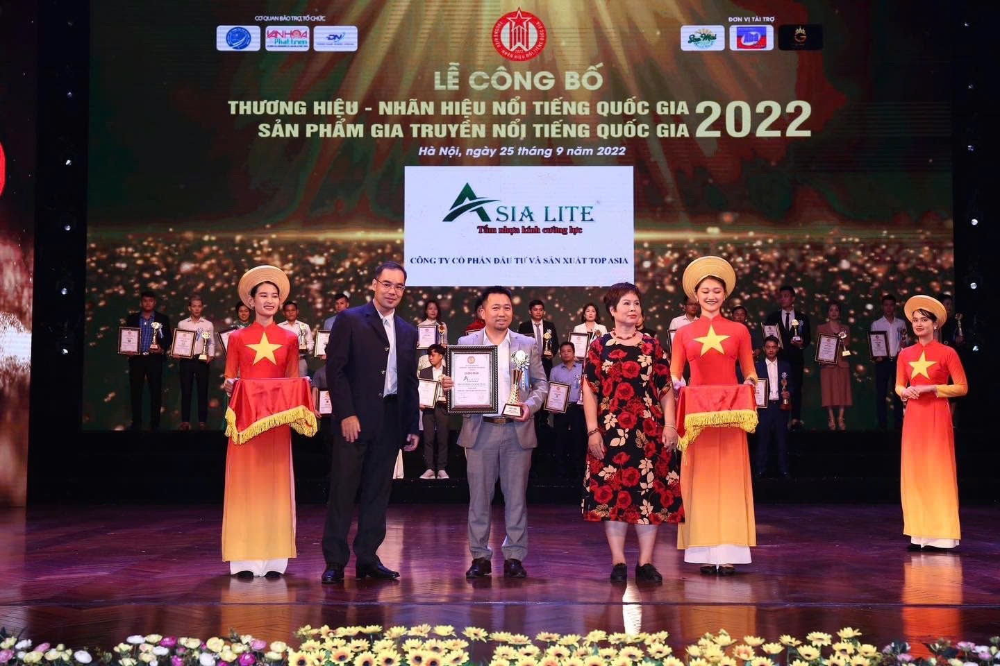
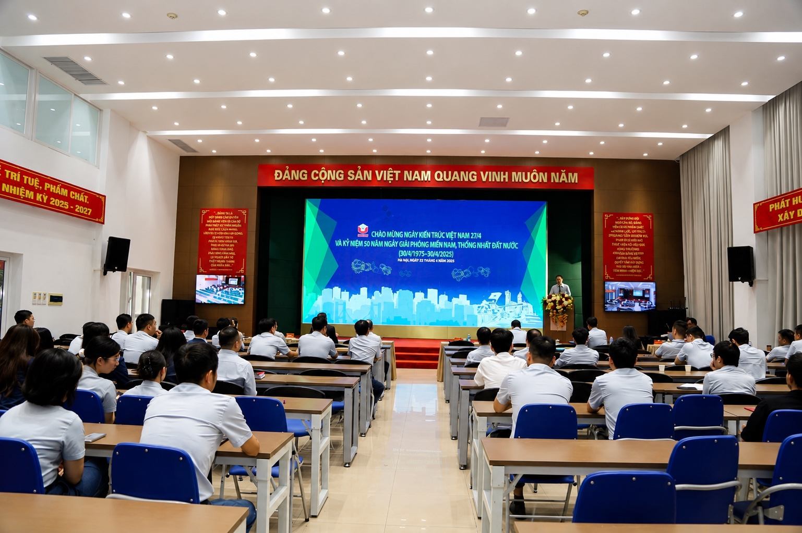
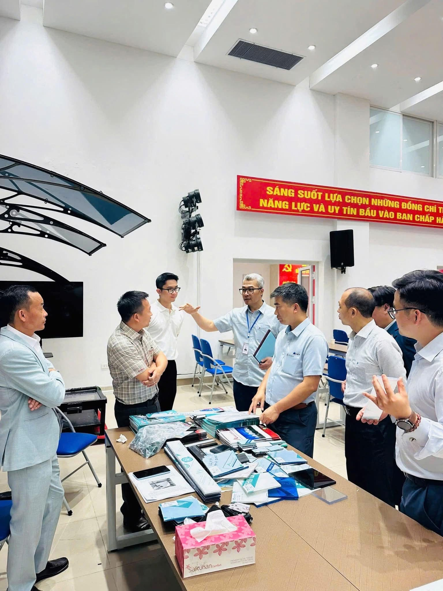

Tấm Polycarbonate đặc ruột
Độ trong và khả năng chịu va đập cao, phù hợp mái che, giếng trời, vách và hạng mục cần tạo hình.

Top Asia mang đến nhóm tấm Polycarbonate và nhựa kính cường lực đa dạng, phục vụ mái che, giếng trời, vách ngăn và nhiều công trình kiến trúc.
Nguyên liệu hạt nhựa nguyên sinh 100%, được nhập khẩu từ các thị trường quốc tế.
Đa dạng độ dày để phù hợp với từng nhu cầu mái che, giếng trời, vách ngăn và công trình lấy sáng.
Lựa chọn màu sắc hài hòa cùng kiến trúc và công trình mái che thực tế.

Top Asia giới thiệu các giải pháp nhựa kính cường lực, chia sẻ thông tin sản phẩm và kết nối cùng đối tác tại hoạt động thực tế.
Hình ảnh và video tại công trình, phòng giao dịch của hệ thống nhựa kính cường lực Top Asia.





Phân loại theo khả năng chịu lực, trọng lượng, độ trong và yêu cầu cách nhiệt của từng công trình.
Độ trong và khả năng chịu va đập cao, phù hợp mái che, giếng trời, vách và hạng mục cần tạo hình.
Trọng lượng nhẹ, hỗ trợ cách nhiệt; kích thước và cấu trúc khoang đang chờ tài liệu kỹ thuật chính thức.
Phối màu, nẹp, vít và vật tư liên kết được tư vấn theo độ dày, khẩu độ và kết cấu công trình.
Độ dày 1–18 mm đang được giới thiệu trên website. Các thông số còn lại cần đối chiếu tài liệu của đúng dòng sản phẩm.
| Hạng mục | Thông tin hiện có | Trạng thái |
|---|---|---|
| Độ dày | 1, 2, 3, 4, 5, 6, 8, 10, 12, 15 và 18 mm | Tư vấn theo ứng dụng |
| Kích thước tấm | Đang cập nhật | Liên hệ nhận thông số chính thức |
| Lớp chống UV | Đang cập nhật theo từng dòng | Cần xác nhận |
| Bán kính uốn | Phụ thuộc độ dày và cấu trúc tấm | Cần xác nhận |
| Màu sắc | Trắng trong, xanh dương, xám xanh, nâu trà, trắng sữa, xanh lá | Đối chiếu mẫu thực tế |
| Phụ kiện | Nẹp, vít và vật tư liên kết | Tư vấn theo hệ mái |
Mái che, giếng trời, vách ngăn hay hạng mục tạo hình.
Đối chiếu tải trọng, khẩu độ, độ trong, màu sắc và chống UV.
Xác nhận kích thước, số lượng, hệ liên kết và địa điểm giao hàng.
Đang cập nhật – vui lòng liên hệ để nhận catalogue và thông số kỹ thuật chính thức.